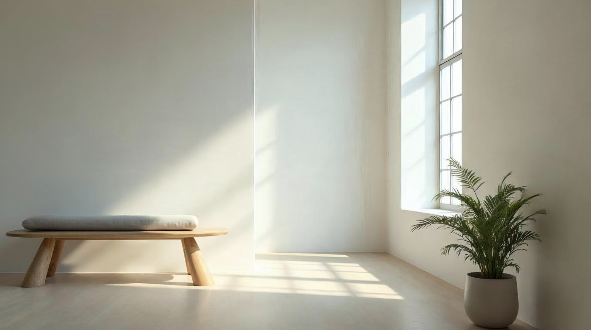
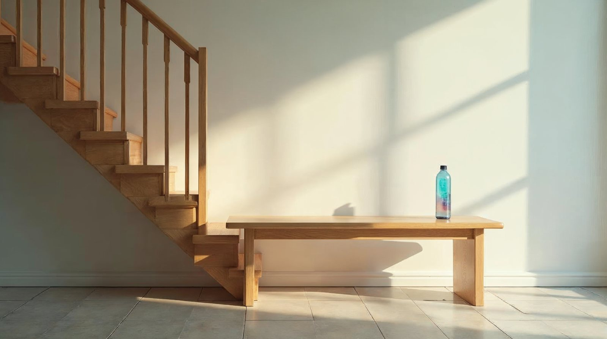
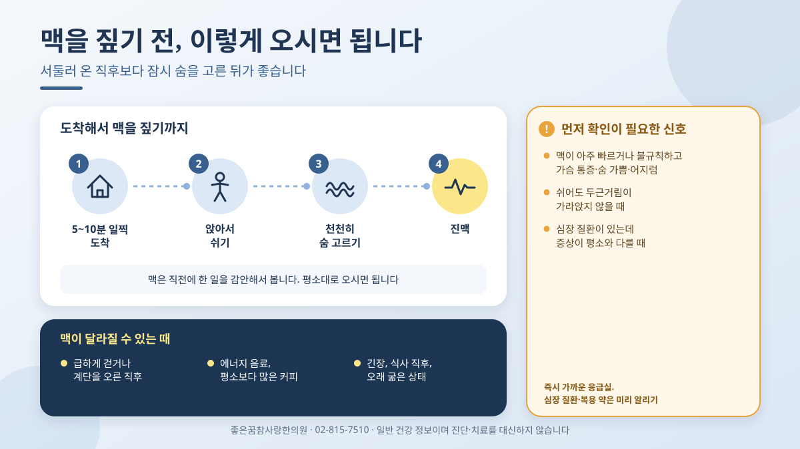

이종호 한의사 감수좋은꿈참사랑한의원 대표원장 (한의사 면허번호 19769)발행 2026-11-23 · 수정 2026-11-26
이 글의 차례
맥을 짚기 전에는 운동을 피하거나 커피를 끊을 필요까지는 없고, 도착한 뒤 잠시 앉아 숨을 고르고 직전에 한 일을 알려 주시면 충분합니다. 맥박은 급하게 걷거나 계단을 오른 직후, 카페인을 마신 뒤, 긴장한 상태에서 쉽게 달라지기 때문입니다.
상도역이나 노량진역에서 서둘러 오셨다면 그 사실부터 말씀해 주세요. 좋은꿈참사랑한의원에서는 어떤 불편으로 오시든 진맥을 모든 분께 짚기 때문에, 특별한 준비보다 평소 모습으로 편하게 오시는 것이 더 중요합니다.
왜 맥이 달라질 수 있나요
- 급하게 걷거나 계단을 오르면 몸이 쓰는 산소가 늘어 맥이 빨라집니다.
- 커피나 에너지 음료의 카페인은 사람에 따라 맥을 빠르게 하거나 두근거림을 느끼게 할 수 있습니다.
- 시간에 쫓기거나 처음 오는 곳이라 긴장하면 맥이 평소와 달라질 수 있습니다.
- 식사 직후나 오래 굶은 상태에서도 몸의 상태가 달라 보일 수 있습니다.
- 전날 잠을 거의 못 잤거나 술을 마신 다음 날에도 맥이 평소와 다르게 느껴질 수 있습니다.
자주 하는 오해
- 아픈 곳이 허리라 맥은 안 봐도 된다고 여기기 쉽지만, 좋은꿈참사랑한의원에서는 통증으로 오신 분께도 진맥을 짚어 몸 전체 상태를 함께 봅니다.
- 진맥 전에 커피를 끊어야 한다고 생각하기 쉽지만, 평소대로 드시고 마신 시간과 양을 알려 주시면 됩니다.
- 맥만 짚으면 병을 다 알 수 있다고 여기기 쉽지만, 진맥만으로 모든 것을 알 수는 없어 문진과 다른 진찰, 필요하면 다른 검사를 함께 봅니다.
- 스마트워치 심박수와 진맥이 같다고 생각하기 쉽지만, 진맥은 빠르기뿐 아니라 맥의 힘과 깊이, 모양을 함께 살핍니다.
예를 들면 이런 경우입니다
- 예를 들어 퇴근하고 역에서 뛰어오는 직장인이라면, 접수 뒤 잠시 앉아 숨을 고른 다음 맥을 짚습니다.
- 예를 들어 시험 기간에 에너지 음료를 하루 두세 캔 마시는 수험생이라면, 마신 시각과 양을 먼저 여쭙고 그 사실을 감안해서 맥을 봅니다.
- 예를 들어 혈압약이나 심장약을 드시는 어르신이라면, 약 이름과 복용 시간을 먼저 확인한 뒤 맥을 짚습니다.
먼저 이렇게 여쭙니다
- 오시는 길에 서둘러 걸었거나 계단을 오르셨나요?
- 오늘 커피나 에너지 음료를 언제, 얼마나 드셨나요?
- 식사는 언제 하셨나요?
- 평소 맥이 빠르다거나 두근거린다는 말을 들은 적이 있나요?
- 어젯밤 잠은 어땠고, 요즘 긴장되는 일이 있나요?

일상에서 먼저 해 볼 수 있는 것
- 예약 시간보다 5~10분 일찍 도착해 앉아서 쉬기
- 진료 직전에는 에너지 음료를 피하고 커피는 평소 양 그대로
- 너무 오래 굶지 말고 가볍게 식사하고 오기
- 숨이 차다면 진료 전에 천천히 숨을 고르기
- 소매가 꽉 끼는 옷이나 손목시계, 팔찌는 진맥 때 쉽게 걷거나 풀 수 있게 하기
- 혈압약이나 심장약을 드신다면 오늘 드신 시각을 기억해 두기
한의원에서 함께 살필 수 있는 경우
- 긴장하면 가슴이 두근거리는 분은 평소 상황과 함께 여쭙니다.
- 카페인에 민감하다고 느끼는 분은 마시는 시간과 양을 함께 살핍니다.
- 직장에서 급히 오는 분은 이동 뒤 잠시 쉬는 방법을 함께 정합니다.
좋은꿈참사랑한의원에서는 먼저 오늘의 상태와 직전에 한 일을 듣고, 숨을 고른 뒤 진맥을 하고, 필요하다고 판단될 때 설진·복진을 함께 참고합니다. 맥은 이런 상황을 감안해서 보며, 상태에 맞춰 침이나 한약 상담 등을 정합니다.
첫 방문에는 접수 때 기본 정보를 적고 잠시 앉아 쉬신 다음, 진료실에서 불편한 점과 함께 잠, 소화, 배변, 몸의 온기를 먼저 여쭙습니다. 이어서 양쪽 손목의 맥을 차례로 짚는데, 손목을 책상 위에 편하게 올려 두시면 되고 시간도 길지 않습니다.
필요하다고 판단되면 설진·복진이나 초음파, 인바디 770 같은 장비로 확인을 더하고, 적어 오신 생활 기록과 검진 결과를 함께 보며 지금 상태와 치료 방향을 설명해 드립니다. 다시 오시면 지난번 맥과 비교하며 이어서 살핍니다.

스스로 점검해 보세요
- 오는 길에 뛰거나 계단을 서둘러 올랐다
- 진료 2~3시간 안에 커피나 에너지 음료를 마셨다
- 6시간 넘게 아무것도 먹지 않았다
- 어젯밤 잠을 거의 못 잤거나 전날 술을 마셨다
- 처음 오는 곳이라 긴장이 된다
- 혈압약, 심장약, 갑상선 약처럼 맥에 영향을 줄 수 있는 약을 먹는다
- 평소 두근거림을 자주 느낀다
해당하는 항목은 진맥 전에 말씀해 주시면 그 사실을 감안해서 맥을 봅니다.
이렇게 기록해 오시면 상담이 쉬워집니다
- 하루에 마시는 커피·에너지 음료의 양과 시간
- 두근거림을 느낀 때와 그 전에 한 일
- 건강검진의 혈압, 맥박, 심전도 결과(있다면)
- 복용 중인 약
- 최근 일주일의 잠든 시각과 일어난 시각
- 스마트워치나 혈압계로 잰 맥박 기록(있다면 참고용)
이런 증상은 먼저 확인이 필요합니다
- 맥이 평소와 달리 아주 빠르거나 불규칙하면서 가슴 통증, 숨 가쁨, 어지럼이 함께 있는 경우(즉시 응급실)
- 쉬어도 두근거림이 가라앉지 않거나 쓰러질 것 같은 경우(바로 가까운 응급실)
이런 신호가 있으면 한의원보다 가까운 병원이나 응급실을 먼저 찾으세요.
함께 읽으면 좋은 글
- 한의원에서 손목 맥을 짚는 진맥은 무엇인가요?
- 뛰어서 도착했는데 바로 진맥을 해도 괜찮나요?
- 진맥은 혈압계나 스마트워치로 재는 맥박과 무엇이 다른가요?

여쭙는 것
- 오시는 길에 서둘러 걸었거나 계단을 오르셨나요?
- 오늘 커피나 에너지 음료를 언제, 얼마나 드셨나요?
- 식사는 언제 하셨나요?
생활에서 해 볼 것
- 예약 시간보다 5~10분 일찍 도착해 앉아서 쉬기
- 진료 직전에는 에너지 음료를 피하고 커피는 평소 양 그대로
- 너무 오래 굶지 말고 가볍게 식사하고 오기
한의원에서 함께 살필 것
- 긴장하면 가슴이 두근거리는 분은 평소 상황과 함께 여쭙니다.
- 카페인에 민감하다고 느끼는 분은 마시는 시간과 양을 함께 살핍니다.
- 직장에서 급히 오는 분은 이동 뒤 잠시 쉬는 방법을 함께 정합니다.
먼저 확인이 필요한 신호
- 맥이 평소와 달리 아주 빠르거나 불규칙하면서 가슴 통증, 숨 가쁨, 어지럼이 함께…
- 쉬어도 두근거림이 가라앉지 않거나 쓰러질 것 같은 경우(바로 가까운 응급실)
한눈에 보는 표
| 구분 | 핵심 |
|---|---|
| 여쭙는 것 | 오시는 길에 서둘러 걸었거나 계단을 오르셨나요? 오늘 커피나 에너지 음료를 언제, 얼마나 드셨나요? |
| 생활에서 해 볼 것 | 예약 시간보다 5~10분 일찍 도착해 앉아서 쉬기 진료 직전에는 에너지 음료를 피하고 커피는 평소 양 그대로 |
| 한의원에서 함께 살필 것 | 긴장하면 가슴이 두근거리는 분은 평소 상황과 함께 여쭙니다. 카페인에 민감하다고 느끼는 분은 마시는 시간과 양을 함께 살핍니다. |
| 먼저 확인이 필요한 신호 | 맥이 평소와 달리 아주 빠르거나 불규칙하면서 가슴 통증, 숨 가쁨, 어지럼이 함께 있는 경우(즉시 응급실) 쉬어도 두근거림이 가라앉지 않거나 쓰러질 것 같은 경우(바로 가까운 응급실) |
자주 묻는 질문
허리가 아파서 왔는데도 맥을 짚나요?
네. 진맥은 모든 분께 짚으며, 통증과 함께 잠, 소화, 피로 상태를 살피는 데 참고합니다.
급히 와서 숨이 찬데 바로 맥을 봐도 되나요?
잠시 앉아 숨을 고른 뒤에 보시길 권합니다.
커피를 마시고 가도 되나요?
괜찮습니다. 다만 마신 시간과 양을 알려 주세요.
평소 맥이 빠른 편이라고 말해야 하나요?
알려 주시면 참고가 됩니다. 건강검진 결과가 있다면 함께 가져오세요.
다시 갈 때마다 맥을 짚나요?
네. 다시 오실 때도 진맥을 짚어 지난번 맥과 비교하며, 그사이 잠과 몸 상태가 어땠는지 이어서 여쭙습니다.
좋은꿈참사랑한의원은 재진 때 지난번 이야기부터 이어서 여쭙니다. 진료시간과 예약은 오시는 길에서 확인하세요.
어디서 상담받을 수 있나요?
좋은꿈참사랑한의원은 서울 동작구 만양로2길 2 신성빌딩 3층·5층(서울 동작구 상도동, 7호선 상도역 3번 출구 근처)에 있습니다. 한의사 3명(이종호 대표원장, 조영기 수석진료원장, 정원영 진료원장)이 진료합니다. 진료시간은 평일 09:30~20:00(점심 13:00~14:00), 토·일·공휴일 09:30~15:00이며, 방문 전 전화로 확인을 권합니다. 예약은 네이버 예약, 카카오톡 상담, 전화 02-815-7510로 받습니다.
이 글은 일반적인 건강 정보이며 개인의 진단이나 치료를 대신하지 않습니다. 증상이 있거나 복용 중인 약이 있다면 진료를 통해 확인하세요. 치료 효과는 개인마다 다를 수 있습니다.
작성 기준: 일반적으로 알려져 있는 건강 정보를 참고해 정리했습니다(대표원장 감수). 증상 기록은 1~2주 동안 하루 1회, 비슷한 시간에 적어 오시면 지난 상태와 비교하기 쉽습니다.